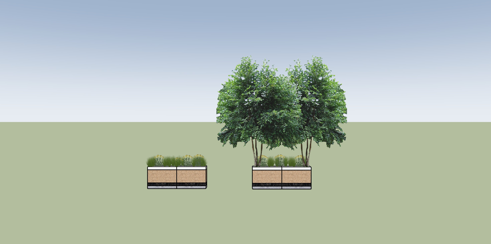
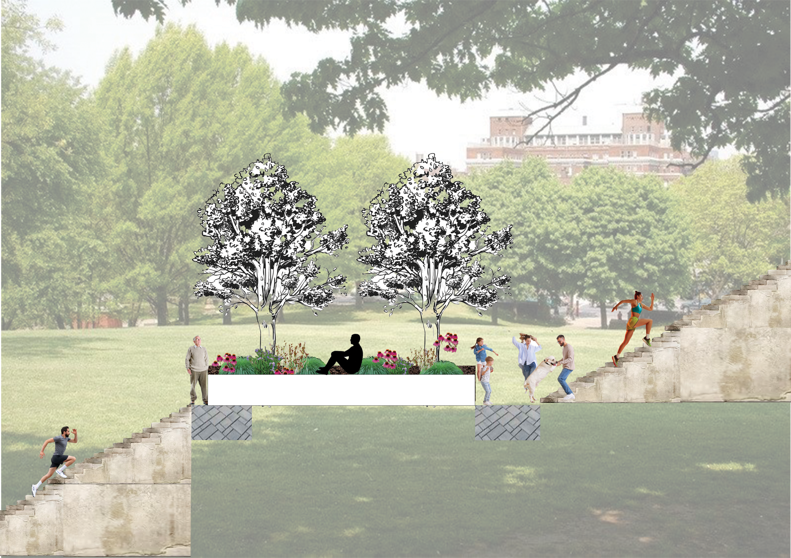
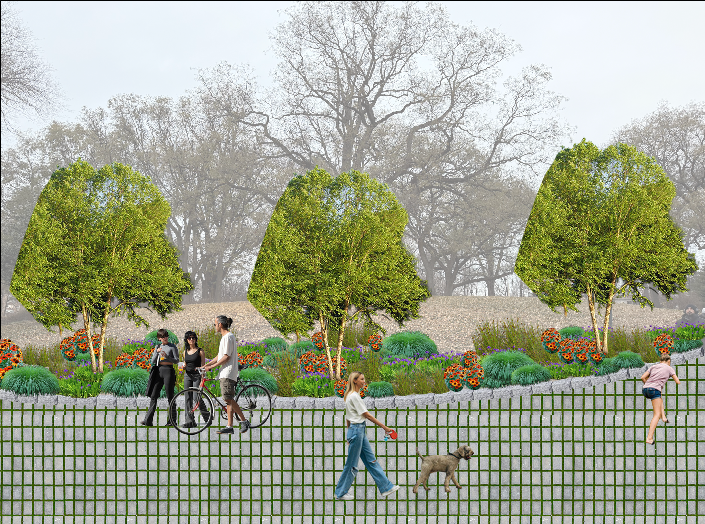

Redesign Fort Greene Park
This project introduces a soft hydrological system into the rigid stair structure of Fort Greene Park. By integrating bioswales into existing circulation, the design reconnects fragmented spatial energies while managing stormwater in a visible and functional way. Rebalance: Connect active and passive zones. Manage: Integrate bioswales for water control. Activate:Transform circulation into social space.

Planting strategies differentiate the bioswale from the main circulation, creating a clear spatial and material contrast.
Spatial Transformation


Design Process